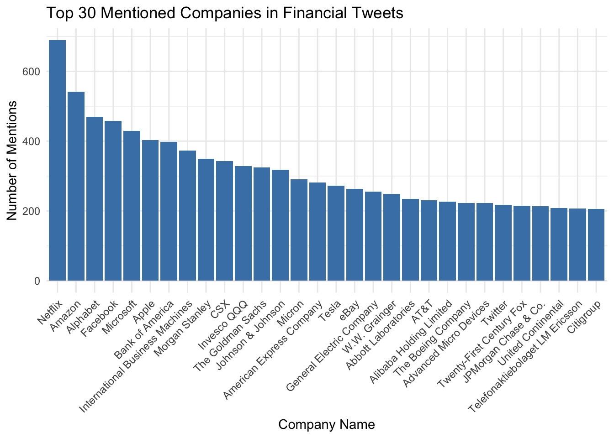
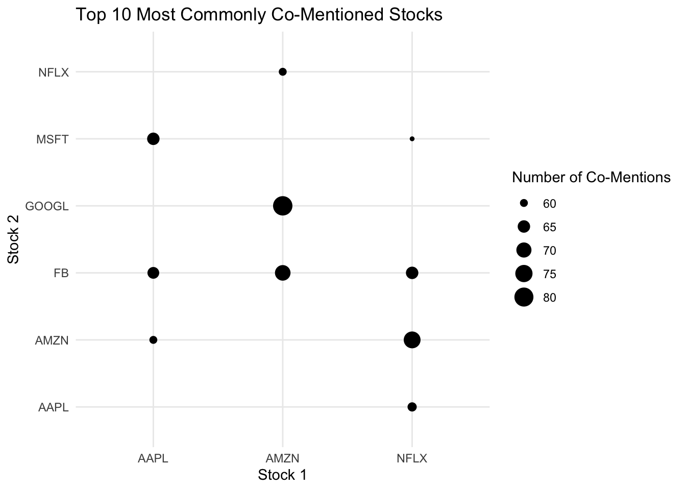

library(tidyverse)
library(lubridate)
library(stringr)
library(ggplot2)
tweets <- read.csv("stockerbot_export.csv")
stocks_cleaned <- read.csv("stocks_cleaned.csv")Twitter (X) Finance Text Analysis
Project 2: Analyzing Financial Tweets
Introduction
In today’s digital society, X (previously known as Twitter) has become a highly influential platform where individuals, analysts, and companies discuss market trends and financial news. This decentralized, real-time commentary provides valuable insights into public sentiment on stocks, cryptocurrencies, and economic policies.
For this analysis, we will use the Financial Tweets dataset from Kaggle, which compiles finance-related tweets. Each entry in this dataset includes tweet text, a timestamp, and other metadata.
Key Question of Interest:
How are stock mentions distributed across different companies, and which stocks dominate financial discussions on Twitter?
By focusing on this question, we aim to uncover patterns in how different companies are discussed and which stocks receive the most attention in online financial conversations.
Load and Clean Data
Data Wrangling and cleaning
First to oragnize our text data, we convert all text to lowercase so that words like “Tesla” and “TESLA” are treated the same. We also remove any URLs that start with "http:// or "https:// and non-whitespace characters with \\S+. Lastly, we remove any puncutation characters (.,!?$@#&, etc.) and replace then with a space " ".
tweets <- read_csv("stockerbot_export.csv") |>
select(text, timestamp, source) |>
rename(timestamp_original = timestamp) |>
mutate(
text_clean = text |>
str_to_lower() |>
str_replace_all("https?://\\S+", "") |>
str_replace_all("[[:punct:]]", " ")
) |>
filter(!is.na(text_clean))Extract Stock Tickers and Map to Company Names
Using the second data set within the sourced Kaggle datasheet, we match the Company names to the stock ticker for clarity.
stocks_cleaned <- stocks_cleaned |>
rename(ticker = ticker,
company_name = name) |>
mutate(
ticker = str_to_upper(ticker)
)
tweets <- tweets |>
mutate( #added a look around
tickers_found = str_extract_all(text_clean, "(?<=\\$)[A-Za-z]{1,6}(?=\\b)")
) |>
unnest(tickers_found) |>
mutate(
tickers_found = str_to_upper(tickers_found)
) |>
left_join(
stocks_cleaned,
by = c("tickers_found" = "ticker")
) |>
filter(!is.na(company_name))
ticker_counts <- tweets |>
count(company_name, sort = TRUE)
head(ticker_counts)# A tibble: 6 × 2
company_name n
<chr> <int>
1 Netflix 689
2 Amazon 542
3 Alphabet 469
4 Facebook 458
5 Microsoft 429
6 Apple 403Visualizing Top Mentioned Companies
top_companies <- ticker_counts |> slice_max(n, n = 30)
ggplot(top_companies, aes(x = reorder(company_name, -n), y = n)) +
geom_col(fill = "steelblue") +
labs(
title = "Top 30 Mentioned Companies in Financial Tweets",
x = "Company Name",
y = "Number of Mentions"
) +
theme_minimal() +
theme(axis.text.x = element_text(angle = 45, hjust = 1))
Co-Occurrences of Stocks in Tweets
Analyzing co-occurrences of stocks in tweets provides valuable insights into how companies are discussed together within financial conversations. When two stocks are frequently mentioned in the same tweet, it may indicate comparisons between competitors, sector-wide discussions, or reactions to correlated market events. For instance, tech giants like Apple (AAPL) and Microsoft (MSFT) may often be mentioned together when investors discuss software trends, while financial firms like Bank of America (BAC) and JPMorgan Chase (JPM) may be co-mentioned in banking-related discussions.
By identifying these relationships, we can enhance our understanding of how investors and analysts perceive different companies in relation to one another. This analysis supports our key question by uncovering which stocks tend to be grouped together in financial discussions and how these relationships may reflect market trends or competitive dynamics.
tweets_with_multiple_tickers <- tweets |>
group_by(text_clean) |>
summarise(tickers = list(unique(tickers_found)), .groups = "drop") |>
filter(lengths(tickers) > 1)
stock_pairs <- tweets_with_multiple_tickers |>
mutate(pairs = map(tickers, ~combn(.x, 2, simplify = FALSE))) |>
unnest(pairs) |>
transmute(ticker1 = map_chr(pairs, 1), ticker2 = map_chr(pairs, 2)) |>
count(ticker1, ticker2, sort = TRUE)
top_stock_pairs <- stock_pairs |> slice_max(order_by = n, n = 10)
ggplot(top_stock_pairs, aes(x = ticker1, y = ticker2, size = n)) +
geom_point() +
labs(
title = "Top 10 Most Commonly Co-Mentioned Stocks",
x = "Stock 1",
y = "Stock 2",
size = "Number of Co-Mentions"
) +
theme_minimal()
Results and Discussion
The analysis reveals that there are certain companies dominate financial discussions on Twitter. Netflix, Amazon, Alphabet (Google), and Microsoft appear as the most frequently mentioned companies, likely reflecting strong public interest in their market movements, earnings reports, or major business decisions. The high volume of mentions suggests that these companies are consistently in the news and at the forefront of investor conversations.
Additionally, our co-occurrence analysis identifies common stock pairings, providing insights into how investors group certain companies together. Notably, we observe frequent co-mentions between Amazon and Google, Facebook and Google, and Apple and Microsoft—suggesting that these firms are often compared or discussed in tandem due to their market positions and competitive relationships.
Conclusion
This analysis highlights the role of Twitter as a real-time hub for financial discussions. The distribution of stock mentions reflects ongoing market narratives, while co-occurrence patterns reveal how investors perceive relationships between firms. Future extensions of this project could explore sentiment analysis, stock price movements, or correlations between tweet volume and actual market performance.